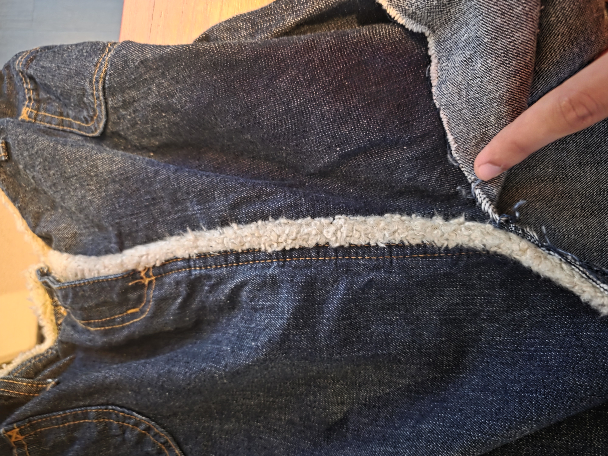
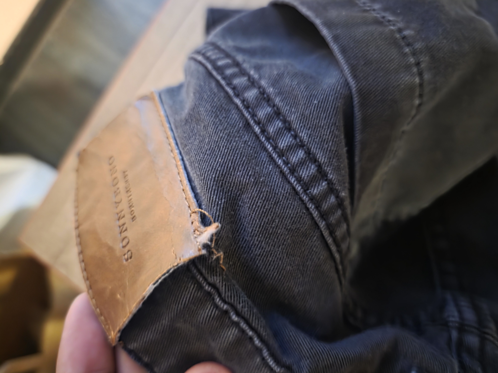
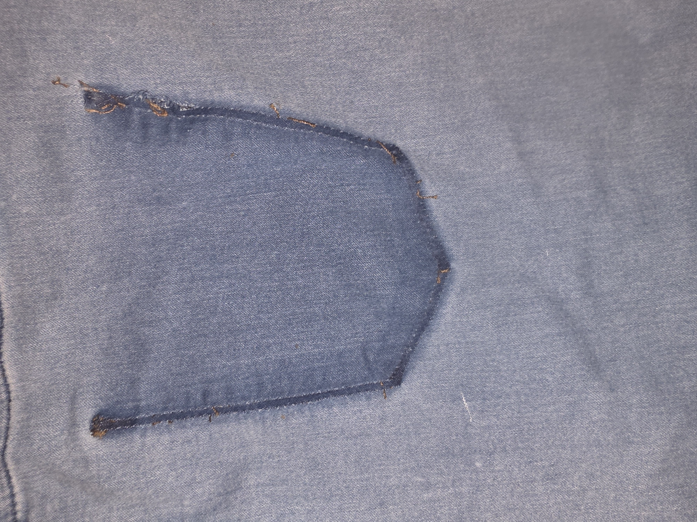
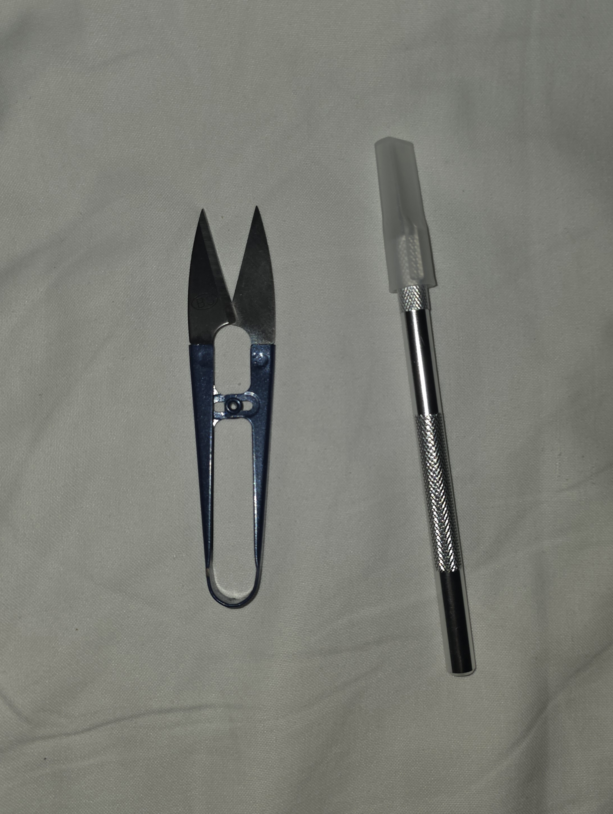
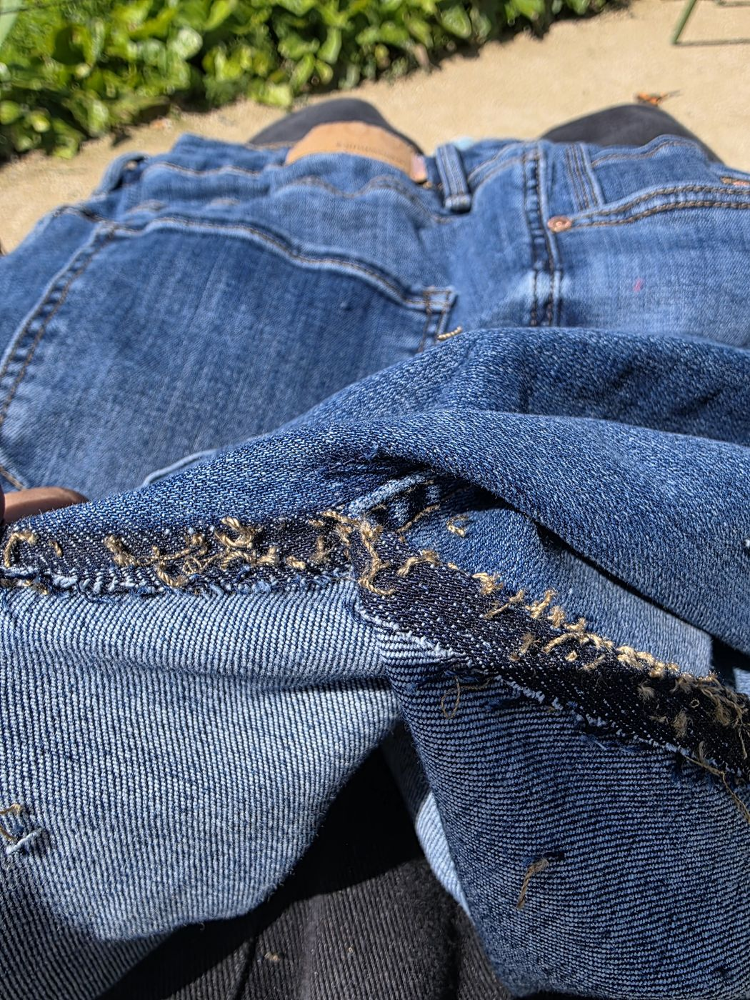
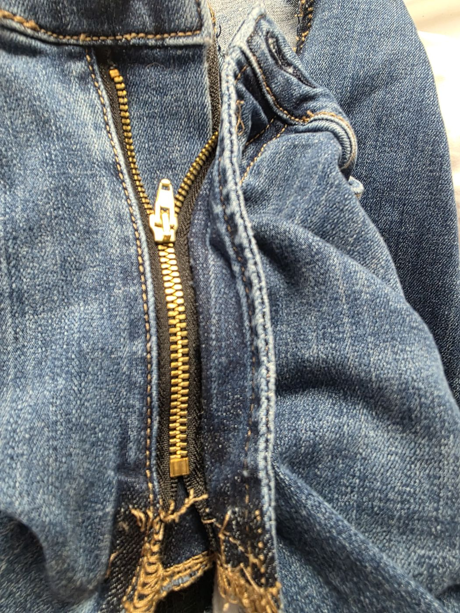
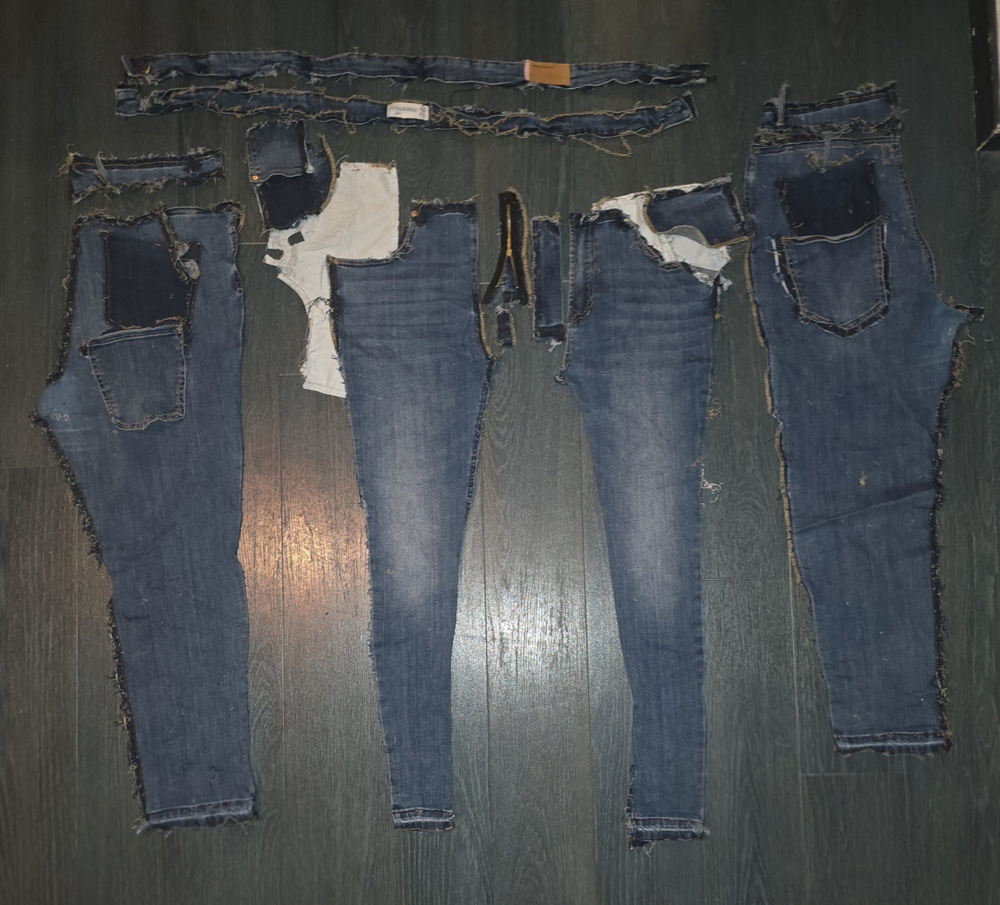
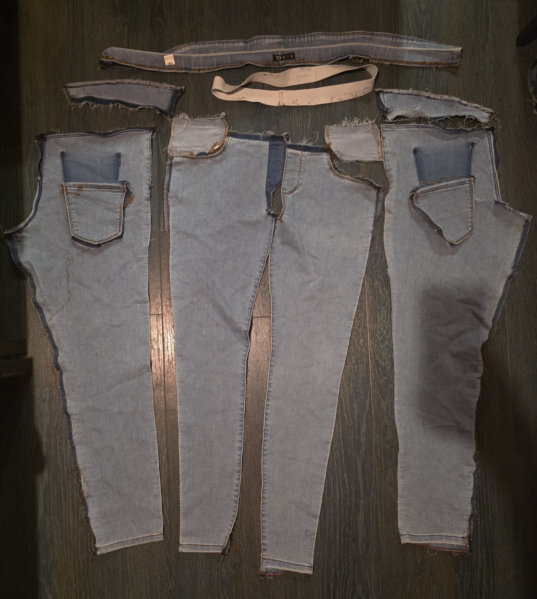

01

Seam
Crotch seam opening
The crotch seam has some loose endsof string, right at the intersection where the inseam meets the rise. This could lead to the stitching giving way and loosening.


The take apart lab assignment, had us go to Les Sales Voleurs second-hand stores, Paris. We were instructed to pick 4 pairs of garment and analyze its make up, structure and different DFM&A choices.
I chose Denim since I have long been interested in the style of Jeans, especially with the recent style shift from skinny jeans to baggier and baggier, I've also personally had my own style shift similarly in terms of what Jeans I wear, thus I decided that I want to learn some more about how Jeans are made, what type of manufacturing underlines the process of making them, and how do companies cut costs especially now that baggy jeans require more fabric, minimizing potential profits.
I must mention that this is a very small sample size, from a shop with a very specific set of items, all these items are second hand, some would considered them outdated in terms of the fashion sense begind them furthermore they are vert cheap, as so is the budget, in this lab I will be comparing construction complexity and country of origin and how that could change with the original price.
I documented common failures across different Jeans. This is the evidence of how denim breaks down after years of using.
The crotch seam has some loose endsof string, right at the intersection where the inseam meets the rise. This could lead to the stitching giving way and loosening.

The denim itself has worn through in the middle of the panel between the legs. The fraying pattern is consistent with the inner thighs rubbing against each other while walking.

The hem stitching at the bottom of the leg has started to rip, opening the cuff and letting the lighter interior fabric pull through.

A small hole has opened along the inseam, with orange topstitching thread frayed and trailing out of the gap. The denim around it is still intact, so a stitch failure would likely precede any fabric wear.

The Sonnybono branded shank button has lost most of its black paint, exposing the bare metal underneath. The thread securing it has also bunched around the shank rather than sitting flush due to it being pulled many times.

The fabric around a small metal stud on the waistband has worn away. It is still intact but the threads are starting to come apart.

The two denim panels of the NYK skirt are visibly ripping away from each other along the front seam, enlargining the vertical gap from the waistband down.

The threads holding the button to the skirt are coming undone, with loose strands visible around the shank.

The leather back patch on the Sonnybono waistband has torn loose at its bottom edge and is curling away from the denim. The leather itself is cracked and peeling, with the stitching at the corner pulled out entirely.

Once the back pocket was removed during deconstruction, a darker rectangular shadow appeared. The pocket protected the denim underneath so the shadow is a record of how much the rest of the panel actually faded with use, on top of whatever factory wash the garment came with.
Every failure was due to a decision made years before, to maybe cut costs or increase effeciency.
This is an overview of each selected pair compairing their category, country of origin, material qualities and construction complexity. Trying to focus on the things that affect matter for a DFM&A.


Inditex group, Barcelona
The most complex piece of the set. As stated, it has Elastomultiester which is a bicomponent stretch fiber (T400 family). It is used to allow for good shape recovery for a lower budget than spandex. Cambodia production points to a high-volume contract factory shared across Inditex brands. The biggest DFM aspect isthe cost-engineered stretch built for scale.

Carrefour private label
The most extreme example of minmise costs in the set. From what I researched, Thirty-two percent polyester in denim is unusually high and is the single largest material cost cut available. This is becasue polyester is dramatically cheaper than cotton. The fake front pockets eliminate two pocket bag pieces and the stitching labor that goes with them, saving a fraction of a euro. Which may seem small but this stacks across tens of thousands of pairs.

Italian budget menswear label
Italian-branded but Pakistan-manufactured. Interestingly, The physical label says 100% cotton but but when I looked it up, the current online listing for this exact color code shows 98% cotton and 2% elastane, I am unsure as to the reason for this descrepency, it could be simply that this is an older version of the pants.

Small Italian label, brand not traceable online
The outlier of the set. Made in Italy with 100% cotton and a simpler skirt silhouette (no rear pockets, fewer pattern pieces). While searching online for this skirt, I could not find it, it seems that the brand left no digital trace, which I beleive is due to a long tail of small Italian denim mills that maybe predate online retail and never had a website or an online listing.
I took two of the four pairs apart completely. This is a highlight of the process, the results and the tools used (Picture on the right).


First step in the deconstruction. Open the chain-stitched hem at the cuff of each leg to free the bottom edge of the denim before any side seams are touched.

Slice the outer side seam from hem to waistband. The gold flat-felled topstitching is the first to come apart, exposing the raw cut edge of the denim underneath.

Open the inner leg seam from hem to crotch. The orange topstitching frays out as the front panel separates from the back along both legs.

Detach the zipper and fly facing from the front panel. The gold zipper teeth come away with their tape still intact, attached to the fly piece.

Unpick the back pocket topstitching and lay it next to the body. The lighter rectangle of denim underneath shows where it had been sewn for years.

A similar process was followed for the second pair. Hem first, then outseam, inseam, fly, and pockets, with the same tools and the same order. Rather than repeat the step-by-step, what follows is just the final result once everything had come apart.

Every garment is a record of the machinery that made it and so it is possible to find out a lot of information about how something was made just by looking at the seams, the stitch density, the hardware and the weave.
| Stitch type | Reference | What it looks like | Machine used | What it tells you |
|---|---|---|---|---|
| Lockstitch (301) |  |
Same on both sides, tight, doesn't unravel if cut | Single needle lockstitch machine | Standard construction |
| Chain stitch (401) |  |
Loopy on the back, ravels if pulled | Chain stitch machine | Classic denim, faster to sew |
| Overlock / Serger (504/505) |  |
Wrapped edge, 3 to 5 threads | Overlock machine | Used to finish raw edges |
| Flatlock / Coverstitch (406) |  |
Two rows on the face, loopy on the back | Coverstitch machine | Used on waistbands and hems |
| Bartack |  |
Dense zigzag block stitch | Bartack machine | Reinforces stress points |
Stitch diagrams and photos via Wikimedia Commons.


| Process | Stradivarius | TEX | Sonnybono | NYK |
|---|---|---|---|---|
| Seam type | Overlock | Overlock | Flat-felled likely | Flat-felled likely |
| Zipper | Plastic / basic metal | No zipper | Metal | Metal |
| Pocket bags | Polyester lining | Non-existent (fake pockets) | Cotton | Cotton |
| Bartacks | Present (Inditex standard) | Minimal | Present | Present |
| Hem stitch | Lockstitch | Lockstitch | Chain stitch | Chain stitch |
| Operations per unit | ~35–40 | ~25–30 | ~35–40 | ~30–35 (skirt, simpler) |
In garment manufacturing, it is clear that cost is controlled through four main levers. Every item in this set shows a different combination of them being controlled.
| Lever | How it is controlled |
|---|---|
| Material | Cheaper fiber blend, thinner yarn, less fabric. |
| Labor | Fewer sewing operations, simpler pattern pieces. |
| Time | Faster machines, skipped finishing steps. |
| Quality control | Fewer checks, higher accepted defect tolerance. |
Accounting for both cheapness and performance.
Prioritize cheapness over everytihng else!
Less focus on fast fashion, more on quality.
Unoptimisated manufacturing, but higher quality.
| DFM factor | Stradivarius | TEX | Sonnybono | NYK |
|---|---|---|---|---|
| Material | High (elastomultiester) | Low (high polyester) | Medium (Cotton) | High (Italian cotton) |
| Labor optimisation | Medium | Maximum | Low | Low |
| Pattern complexity | Medium | Low (fake pockets) | Medium | Low (skirt) |
| Construction quality | Medium | Low | Medium | High |
| My perceived value | Medium | Low | High | High |
| DFM sophistication | High | Medium | Low | N/A (pre-DFM era?) |
| User-centred decisions | Few | Very few | Some | Some to many |
Across all four items, the biggest gains come from upgrading the material used and not possible faking functional feature (Like pockets).
Keep the elastomultiester, but upgrade the pocket bag fabric polyester to a material like cotton. Total added cost is roughly €0.15.
Either make the front pockets real or remove the topstitched fake opening entirely. A fake pocket that looks real gives the user a sense of diasppointement. Furthermore, the polyester could be reduced from 32% to 15% at max, the difference would be highly noticeable, and cotton prices at Carrefour's volume are small per unit.
It is a viable option to add 2% elastane. Since it costs very little at production scale, but it dramatically improves comfort and fit. Furthermore, It would eliminate the stiffness that makes these jeans feel cheap. Also, fix the BOM inconsistency between production runs, if the fabric spec changes, the label itself must change too.
Increase thread strength as some of it is tearing, additional costs would be very small.
A complete sourcing breakdown for the Stradivarius 1400 Skinny, the cleverest pair in the set, at a production run of 1,000 units. Every component is tied to a real vendor and a real price band.
| Part name + function | Spec | Qty / unit | Vendor + link | Part no. / SKU | Price @ 1k | Minimum Order Quantity | Lead time | Sourcing notes |
|---|---|---|---|---|---|---|---|---|
| Piece goods | ||||||||
| Shell fabric, indigo stretch denim Main garment body. 90 / 8 / 2 blend confirmed from label. | 90% cotton, 8% elastomultiester (LYCRA T400), 2% elastane, indigo rope-dyed, 9 to 10oz, 3x1 twill, 58" wide | 1.3 m | Calik Denim Turkish denim mill | Stretch indigo, T400, 9 to 10oz Quote required |
~$3.65 to $5.20 | 500 m | 6 to 8 wks | Quote required |
| Pocket bag fabric Front | 100% cotton drill, 4 to 5oz, natural white, 60" wide | 0.5 m | ApparelX B2B B2B marketplace | Cotton drill pocket lining Search on ApparelX |
~$0.35 to $0.50 | 200 m | 3 to 4 wks | Skinny fit uses a bit less fabric than a regular fit. |
| Hardware and fasteners | ||||||||
| Tack button Waistband closure, one per garment | 17 mm, zinc alloy + brass tack pin, antique brass or gunmetal finish, Duramark feed-through compatible | 1 pc | Scovill Fasteners OEM supplier | Scovill Duramark Tack Button Quote required |
~$0.06 to $0.10 | 1,000 pc | 4 to 6 wks | Quote required |
| Copper rivets Pocket stress points; confirmed in photo | 9 mm dome head, copper finish, two-part cap + post | 6 pc | Scovill Fasteners OEM supplier | Scovill Jean Rivets 6,000 pc for 1,000 units |
~$0.36 | 5,000 pc | 4 to 6 wks | |
| Metal zipper, fly Fly closure | YKK #5, brass closed-end, 6" (15 cm), antique brass, flat locking pull, black polyester tape | 1 pc | YKK Fastening OEM direct | YKK #5 Brass Closed-End Cambodia office |
~$0.40 to $0.60 | 500 pc | 3 to 5 wks | Confirmed metal YKK is the default Inditex zipper. They have an office in Cambodia, so no importing needed. |
| Thread | ||||||||
| Topstitch thread, gold contrast Decorative + structural; gold confirmed in photo | Coats Epic Tkt 80 / Tex 40, polyester corespun, tan-gold, 5,000 m cone | ~80 m | Coats Group Thread OEM | Coats Epic Tkt 80, tan / gold 17 cones for 1,000 units |
~$0.04 to $0.06 | 1 cone | 2 to 3 wks | Coats is the standard thread brand for these factories. They can supply locally. |
| Seam + overlock thread, blue / black Structural seam stitching throughout | Coats Epic Tkt 120 / Tex 30, polyester corespun, dark indigo or black, 5,000 m cone | ~150 m | Coats Group Thread OEM | Coats Epic Tkt 120, dark indigo / black 31 cones for 1,000 units |
~$0.05 to $0.07 | 1 cone | 2 to 3 wks | Standard Dark thread to match the indigo. |
| Interlining | ||||||||
| Waistband interlining Prevents rolling, provides structure | Freudenberg Vilene MS-Tape, fusible perforated nonwoven, 38 mm wide, black, medium weight | 0.15 m | Freudenberg PM Interlining OEM | Freudenberg Vilene MS-Tape Quote required |
~$0.08 to $0.15 | 50 m roll | 4 to 5 wks | Quote required |
| Labels and packaging | ||||||||
| Woven brand + size labels Stradivarius branding + EU 44 size; woven confirmed in photo | Jacquard woven, ~50 x 30 mm brand + ~30 x 15 mm size label, Stradivarius branding, centrefold | 2 pc | SML Group Label OEM | Custom woven label set Quote required |
~$0.05 to $0.10 | 1,000 pc | 3 to 4 wks | Confirmed woven SML is one of the label suppliers Inditex actually approves. Safe choice. |
| Care + content label EU fibre regulation compliance | Printed satin / taffeta, EU Reg 1007/2011, min 2 languages, 90% cotton / 8% elastomultiester / 2% elastane stated | 1 pc | Avery Dennison Label OEM | Custom printed care label Quote required |
~$0.02 to $0.04 | 1,000 pc | 2 to 3 wks | |
| Faux leather back patch Brand waistband patch; tan / orange confirmed in photo | PU faux leather, ~60 x 40 mm, embossed Stradivarius logo, tan, sewn attachment | 1 pc | Trimco Group Trim OEM | Custom embossed PU patch Quote required |
~$0.05 to $0.08 | 500 pc | 4 to 5 wks | Real leather would add about $0.20 per pair. |
| Hangtag + barcode + polybag Retail display, scanning, packaging | Printed card hangtag + PP barcode sticker (style 1400) + LDPE polybag 40 x 55 cm, self-seal | 1 set | Avery Dennison + local polybag Consolidate vendors | Hangtag + barcode (Avery), polybag (local) Custom |
~$0.05 to $0.08 | 1,000 set | 2 to 3 wks | |
| Total estimated material cost per unit @ 1,000 units Shell fabric is roughly 60 to 65% of the total. Excludes: cutting and sewing labour (~$2 to $4 per unit in Cambodia), factory overhead, finishing, QC, freight, duties. |
~$5.15 to $7.25 USD | |||||||